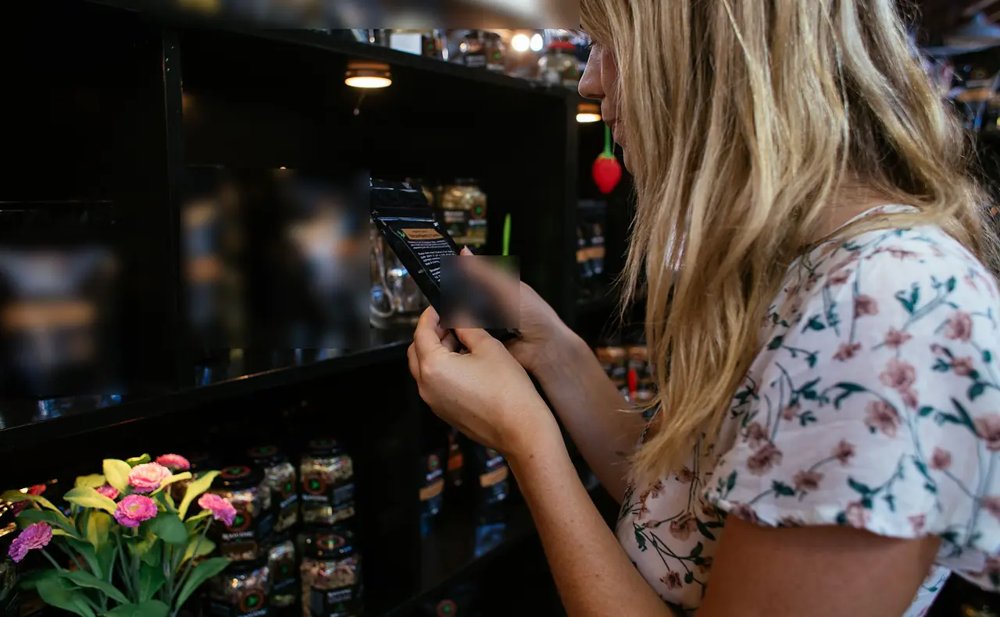
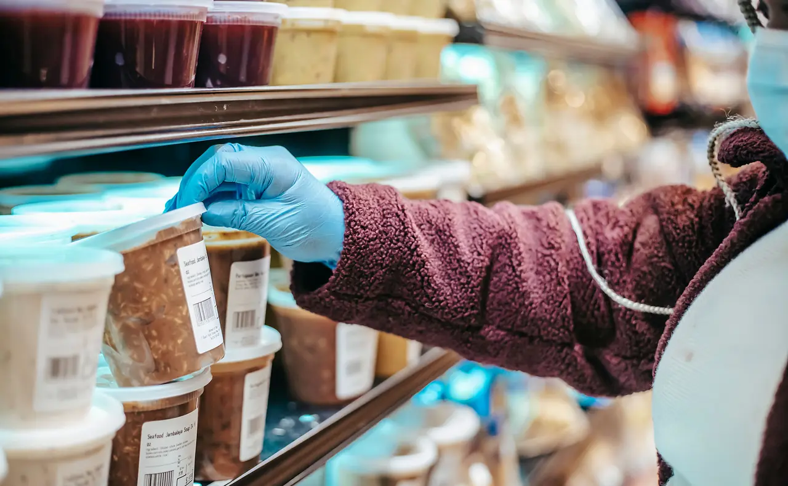

Thiết kế bao bì
Nhãn sản phẩm bắt buộc ghi những gì? Cập nhật theo Nghị định 37/2026/NĐ-CP
Nhiều tài liệu trên mạng vẫn dẫn Nghị định 43/2017 và 111/2021, trong khi hai văn bản này đã hết hiệu lực từ đầu năm 2026. Bài này tóm tắt những gì nhãn phải có, nhìn từ góc độ người thiết kế bao bì.

Nhãn sản phẩm bắt buộc ghi những gì? Theo Nghị định 37/2026/NĐ-CP, có hiệu lực từ 23/01/2026 và thay thế Nghị định 43/2017/NĐ-CP cùng Nghị định 111/2021/NĐ-CP, nhãn hàng hóa lưu thông tại Việt Nam phải thể hiện bằng tiếng Việt ít nhất ba nội dung chung: tên hàng hóa, tên và địa chỉ tổ chức, cá nhân chịu trách nhiệm về hàng hóa, và xuất xứ hàng hóa. Ngoài ra, tùy nhóm hàng như thực phẩm, mỹ phẩm, đồ gia dụng, nhãn còn phải có thêm các nội dung như định lượng, ngày sản xuất, hạn sử dụng, thành phần, hướng dẫn sử dụng, cảnh báo theo phụ lục của nghị định.
Lưu ý quan trọng: bài viết mang tính tham khảo, tóm tắt từ văn bản pháp luật và hướng dẫn của cơ quan nhà nước tại thời điểm viết (11/2026), không phải tư vấn pháp lý. Quy định ghi nhãn còn phụ thuộc quy định chuyên ngành của từng loại hàng. Trước khi in, hãy đối chiếu văn bản gốc hoặc hỏi cơ quan quản lý, người có chuyên môn về ngành hàng của bạn. Doanh nghiệp chịu trách nhiệm về tính chính xác của nội dung nhãn.
Văn bản nào đang áp dụng cho nhãn hàng hóa
Trong nhiều năm, quy định ghi nhãn chủ yếu nằm ở Nghị định 43/2017/NĐ-CP về nhãn hàng hóa, được sửa đổi bởi Nghị định 111/2021/NĐ-CP. Từ ngày 23/01/2026, hai nghị định này hết hiệu lực. Nội dung về nhãn hàng hóa được đưa vào Nghị định 37/2026/NĐ-CP quy định chi tiết và hướng dẫn thi hành Luật Chất lượng sản phẩm, hàng hóa.
Bộ Khoa học và Công nghệ có trả lời hỏi đáp về ghi nhãn hàng hóa theo Nghị định 37/2026/NĐ-CP, và các cơ quan quản lý chất lượng ở địa phương cũng đã đăng bài tóm tắt điểm mới trong ghi nhãn hàng hóa. Nếu tài liệu bạn đang dùng, hay mẫu nhãn nhà in gửi, vẫn dẫn Nghị định 43/2017, hãy kiểm tra lại theo văn bản mới.
Nhãn và bao bì đã in theo quy định cũ thì sao?
Theo điều khoản chuyển tiếp được các cơ quan và đơn vị tư vấn tóm tắt, hàng hóa đã ghi nhãn đúng quy định cũ và lưu thông hợp pháp trước ngày nghị định có hiệu lực được tiếp tục lưu thông đến hết hạn sử dụng ghi trên nhãn. Nhãn và bao bì đã in trước ngày 23/01/2026 mà chưa dùng hết được tiếp tục sử dụng nhưng không quá 02 năm kể từ ngày nghị định có hiệu lực. Nếu bạn đang có kho bao bì in sẵn, hãy lên kế hoạch dùng hết hoặc chuyển sang mẫu mới trong thời hạn này.
Nội dung bắt buộc chung cho mọi nhãn
Theo khoản 1 Điều 42 Nghị định 37/2026/NĐ-CP, hàng hóa lưu thông tại Việt Nam phải thể hiện bằng tiếng Việt các nội dung chung sau:
- Tên hàng hóa. Tên giúp người mua biết đây là sản phẩm gì. Tên thương hiệu đẹp đến đâu cũng nên đi kèm tên gọi rõ loại sản phẩm, ví dụ "Trà ô long" hay "Sữa rửa mặt".
- Tên và địa chỉ của tổ chức, cá nhân chịu trách nhiệm về hàng hóa. Với hàng gia công, nhãn cần thể hiện đúng bên chịu trách nhiệm theo quy định, thường là bên đặt gia công.
- Xuất xứ hàng hóa. Cách ghi xuất xứ có hướng dẫn riêng; khi không xác định được xuất xứ theo quy tắc, các tài liệu hướng dẫn nêu cách ghi nơi thực hiện công đoạn cuối cùng để hoàn thiện hàng hóa.
- Các nội dung khác theo tính chất của từng loại hàng, được liệt kê tại Phụ lục I của nghị định.
Một số loại hàng không phải ghi nhãn hoặc không cần nhãn phụ, ví dụ hàng tạm nhập tái xuất, hàng quá cảnh, hàng đã qua sử dụng. Hàng không có bao bì thương phẩm như hàng rời, chất lỏng, khí thì thay cho nhãn là hồ sơ, tài liệu kèm theo bằng tiếng Việt. Nếu sản phẩm của bạn thuộc các trường hợp đặc biệt, hãy đối chiếu kỹ văn bản.
Nội dung bắt buộc theo nhóm hàng phổ biến
Bảng dưới tóm tắt nội dung bổ sung cho một số nhóm hàng mà các doanh nghiệp nhỏ hay làm nhãn, theo Phụ lục I như được các cơ quan và đơn vị pháp lý tóm tắt. Mỗi nhóm còn có thể có quy định chuyên ngành riêng, nên đây là danh sách để đối chiếu chứ không thay văn bản gốc.
| Nhóm hàng | Nội dung bổ sung thường phải có | Lưu ý khi thiết kế |
|---|---|---|
| Thực phẩm | Định lượng; ngày sản xuất; hạn sử dụng; thành phần hoặc thành phần định lượng; thông tin cảnh báo (nếu có); hướng dẫn sử dụng, hướng dẫn bảo quản | Một số nhóm thực phẩm có thể ghi "sử dụng tốt nhất trước ngày"; thực phẩm bảo vệ sức khỏe có quy định riêng |
| Mỹ phẩm | Định lượng; thành phần hoặc thành phần định lượng; số lô sản xuất; ngày sản xuất hoặc hạn sử dụng; hướng dẫn sử dụng; thông tin cảnh báo | Kiểm tra thêm quy định chuyên ngành về mỹ phẩm của Bộ Y tế; tuýp, lọ nhỏ rất ít chỗ |
Các nhóm khác như đồ uống, đồ gia dụng, thiết bị điện, đồ chơi, hàng dệt may đều có mục riêng trong Phụ lục I với danh sách nội dung khác nhau. Với những nhóm này, hãy tra đúng mục của sản phẩm thay vì dùng lại danh sách của thực phẩm hay mỹ phẩm.
Nếu sản phẩm của bạn là đặc sản, quà tặng, hộp quà gồm nhiều món, mỗi món bên trong vẫn cần nhãn đúng nhóm hàng của nó, còn hộp ngoài cần thông tin của bộ sản phẩm. Đây là điểm hay bị bỏ sót khi làm hộp quà Tết.
Ngôn ngữ, vị trí và cỡ chữ
Ngôn ngữ
Nội dung bắt buộc phải ghi bằng tiếng Việt. Bạn có thể ghi thêm tiếng Anh hoặc ngôn ngữ khác để phục vụ khách nước ngoài hay xuất khẩu, nhưng nội dung ghi thêm không được mâu thuẫn với phần tiếng Việt và theo các bài hướng dẫn, cỡ chữ ngôn ngữ khác không được lớn hơn chữ tiếng Việt. Hàng nhập khẩu có nhãn gốc tiếng nước ngoài phải có nhãn phụ tiếng Việt đầy đủ nội dung bắt buộc trước khi đưa ra lưu thông.
Vị trí
Nhãn phải thể hiện trên hàng hóa hoặc bao bì thương phẩm, ở vị trí khi quan sát có thể nhận biết dễ dàng, đầy đủ các nội dung mà không phải tháo rời các chi tiết của sản phẩm. Với thiết kế, điều này có nghĩa là đừng giấu thông tin bắt buộc dưới nắp gấp phải xé mới thấy, hay ở mặt trong của hộp.
Cỡ chữ
Chữ phải đọc được bằng mắt thường. Nghị định mới có quy định về cỡ chữ tối thiểu cho nội dung bắt buộc và cách xử lý khi bao bì quá nhỏ; khi thiết kế cho tuýp, gói nhỏ, hãy kiểm tra quy định này trên văn bản gốc trước khi chốt cỡ chữ.
Cách ghi ngày sản xuất, hạn sử dụng
Đây là phần hay bị sai nhất trên nhãn tự làm. Theo các hướng dẫn về Nghị định 37/2026/NĐ-CP:
- Ngày, tháng, năm ghi theo thứ tự ngày, tháng, năm của năm dương lịch. Nếu ghi theo thứ tự khác thì phải có chú thích bằng tiếng Việt.
- Năm ghi đủ bốn chữ số, các số của một mốc thời gian nằm trên cùng một dòng.
- Có thể dùng chữ viết tắt NSX cho ngày sản xuất và HSD cho hạn sử dụng. Nếu nhãn dùng cách ghi tiếng nước ngoài thì phải có hướng dẫn trên nhãn.
- Với một số nhóm thực phẩm, có thể thay "hạn sử dụng" bằng "sử dụng tốt nhất trước ngày".
Mẹo thiết kế: ngày sản xuất, hạn sử dụng, số lô thay đổi theo từng mẻ nên thường được in phun hoặc dán tem sau. Trên file thiết kế, hãy chừa sẵn một ô trống rõ ràng, có nhãn "NSX", "HSD", "Số lô" in sẵn bên cạnh, nền sáng và phẳng để mực in phun bám và đọc được.
Nhãn điện tử và mã QR
Nghị định 37/2026/NĐ-CP cho phép tổ chức, cá nhân lựa chọn thể hiện thông tin qua nhãn điện tử như mã QR, NFC, Data Matrix, RFID. Đây là lựa chọn tự nguyện. Điều kiện để một phần nội dung chỉ thể hiện trên nhãn điện tử, thay vì in trên bao bì, phụ thuộc vào loại hàng và mức độ rủi ro, nên hãy đọc kỹ văn bản trước khi lược bớt nội dung in. Với đa số doanh nghiệp nhỏ, cách an toàn là vẫn in đủ nội dung bắt buộc, dùng mã QR để bổ sung thông tin như câu chuyện sản phẩm, hướng dẫn chi tiết, kênh mua hàng.

Ví dụ minh họa: sắp xếp nhãn cho một hũ mật ong
Tình huống giả định: một hợp tác xã nhỏ bán mật ong trong hũ thủy tinh 500 g, muốn nhãn đẹp để bán quà tặng. Không phải khách hàng thật.
- Mặt chính: tên thương hiệu, tên hàng hóa "Mật ong", hình minh họa, khối lượng tịnh. Mặt chính là nơi khách nhìn thấy trên kệ và trong ảnh bán hàng.
- Mặt sau hoặc nhãn phụ: thành phần, hướng dẫn sử dụng và bảo quản, cảnh báo nếu có, tên và địa chỉ đơn vị chịu trách nhiệm, xuất xứ, mã QR dẫn tới trang giới thiệu.
- Ô in phun: NSX, HSD, số lô ở vùng phẳng phía dưới nhãn sau.
- Kiểm tra: in thử nhãn thật kích thước, dán lên hũ, xoay hũ đọc từng dòng, chụp ảnh bằng điện thoại xem chữ có rõ không.
Cách chia mặt chính, mặt phụ này áp dụng được cho hầu hết sản phẩm. Xem thêm trang thiết kế bao bì thực phẩm và thiết kế bao bì mỹ phẩm.
Checklist trước khi gửi file nhãn cho nhà in
- Đã đối chiếu nội dung với Nghị định 37/2026/NĐ-CP và quy định chuyên ngành của nhóm hàng chưa?
- Tên hàng hóa, tên và địa chỉ đơn vị chịu trách nhiệm, xuất xứ đã ghi bằng tiếng Việt chưa?
- Định lượng ghi đúng đơn vị đo, đúng với hồ sơ công bố hoặc tự công bố sản phẩm (nếu có) chưa?
- Đã chừa ô NSX, HSD, số lô đủ rộng cho máy in phun chưa?
- Chữ nhỏ nhất trên nhãn in thử có đọc được không?
- Phần tiếng nước ngoài có nhỏ hơn hoặc bằng phần tiếng Việt và không mâu thuẫn không?
- Mã vạch, mã QR đã quét thử trên bản in thật chưa?
- Thông tin bắt buộc có nằm ở vị trí nhìn thấy mà không phải mở, xé bao bì không?
Sai lầm thường gặp khi thiết kế nhãn
- Dùng mẫu nhãn cũ dẫn Nghị định 43/2017. Văn bản này đã hết hiệu lực; mẫu cũ có thể vẫn đúng phần lớn nhưng cần rà lại theo quy định mới.
- Chỉ có tên thương hiệu, thiếu tên hàng hóa. Khách và cơ quan kiểm tra không biết sản phẩm là gì.
- Chữ quá nhỏ, màu chữ chìm vào nền. Chữ vàng nhạt trên nền trắng, chữ đen trên nền nâu đậm khó đọc, nhất là sau khi in trên giấy kraft.
- Đặt thông tin bắt buộc ở nếp gấp, đường dán hoặc phần bị che khi đóng gói.
- Phần tiếng Anh to hơn tiếng Việt vì muốn nhãn trông "sang", trong khi quy định ưu tiên tiếng Việt.
- In sẵn hạn sử dụng cố định trên bao bì rồi phải dán đè khi lô sau có ngày khác.
- Nội dung quảng cáo vượt quá công dụng thực tế, nhất là với thực phẩm và mỹ phẩm. Các nhóm hàng này có quy định riêng về công bố công dụng.
Bạn có thể đọc thêm các lưu ý về chất liệu và kỹ thuật in trong bài thiết kế bao bì cao cấp cho sản phẩm Việt và quy trình thiết kế trong bài thiết kế bao bì sản phẩm. Nếu thương hiệu còn chưa có logo, xem bài thiết kế logo bao nhiêu tiền.
Chi phí thiết kế nhãn, bao bì tại Dream Labs
Dream Labs thiết kế nhãn và bao bì sẵn sàng in: sắp xếp nội dung bắt buộc rõ ràng, chừa ô in phun, xuất file CMYK chuẩn cho nhà in. Gói Cơ bản 2.000.000đ cho một mẫu nhãn hoặc bao bì với 2 phương án ý tưởng. Gói Chuyên nghiệp 5.000.000đ cho bộ bao bì đến 3 kích thước, có mockup 3D và hỗ trợ làm việc với nhà in. Gói Cao cấp 12.000.000đ cho cả dòng sản phẩm kèm nhận diện thương hiệu và brand guideline.
| Gói | Giá | Thời gian | Bao gồm |
|---|---|---|---|
| Cơ bản | 2.000.000đ | 3–5 ngày4 vòng sửa | Nhãn, bao bì đủ chuẩn để in ngay, sản phẩm trông đáng tin hơn trên kệ và trên ảnh.
|
| Chuyên nghiệpPhổ biến nhất | 5.000.000đ | 7 ngày9 vòng sửa | Bộ bao bì đồng bộ kèm mockup 3D: có ảnh quảng cáo trước cả khi in, làm việc với nhà in suôn sẻ.
|
| Cao cấp | 12.000.000đ | 14 ngày5 vòng sửa | Cả dòng sản phẩm chung một nhận diện, có brand guideline để mọi ấn phẩm sau này nhất quán.
|
Nội dung nhãn do doanh nghiệp cung cấp và chịu trách nhiệm; Dream Labs nhắc các mục thường thiếu và trình bày cho dễ đọc, nhưng không thay thế tư vấn pháp lý. Xem chi tiết tại trang thiết kế bao bì và bảng giá, hoặc gửi nội dung nhãn và kích thước bao bì qua Zalo 0934 246 420.
Câu hỏi thường gặp
Nghị định 43/2017/NĐ-CP về nhãn hàng hóa còn hiệu lực không?
Không. Từ ngày 23/01/2026, Nghị định 43/2017/NĐ-CP và Nghị định 111/2021/NĐ-CP hết hiệu lực; quy định về nhãn hàng hóa hiện nằm trong Nghị định 37/2026/NĐ-CP. Nhãn, bao bì đã in trước đó được dùng tiếp trong thời hạn chuyển tiếp không quá 02 năm.
Hàng tự sản xuất bán online có cần ghi nhãn không?
Hàng hóa lưu thông tại Việt Nam, kể cả bán qua mạng, nhìn chung phải ghi nhãn theo quy định, trừ các trường hợp được miễn. Sản phẩm thực phẩm, mỹ phẩm còn có thể phải công bố hoặc tự công bố trước khi bán, nên hãy kiểm tra quy định của ngành hàng.
Có bắt buộc ghi cả ngày sản xuất và hạn sử dụng không?
Tùy nhóm hàng. Thực phẩm thường phải có cả ngày sản xuất và hạn sử dụng; mỹ phẩm theo bảng tóm tắt phụ lục là ngày sản xuất hoặc hạn sử dụng, kèm điều kiện riêng với sản phẩm có độ ổn định ngắn. Hãy đối chiếu đúng mục của nhóm hàng trong Phụ lục I.
Nhãn có được ghi toàn bộ bằng tiếng Anh không?
Không, với hàng lưu thông trong nước. Nội dung bắt buộc phải có bằng tiếng Việt; tiếng Anh hoặc ngôn ngữ khác chỉ là phần ghi thêm, không mâu thuẫn và không lớn hơn chữ tiếng Việt.
Có thể chỉ in mã QR thay cho các thông tin trên nhãn không?
Nghị định mới cho phép dùng nhãn điện tử, nhưng điều kiện để thay phần in bằng nhãn điện tử phụ thuộc loại hàng. Với doanh nghiệp nhỏ, cách an toàn là in đủ nội dung bắt buộc và dùng mã QR để bổ sung thông tin.
Đơn vị thiết kế có chịu trách nhiệm về nội dung nhãn không?
Thông thường không. Đơn vị thiết kế trình bày nội dung cho rõ ràng, dễ đọc, đúng kỹ thuật in; tính chính xác và sự phù hợp quy định của nội dung do doanh nghiệp đứng tên trên nhãn chịu trách nhiệm.
Nguồn ảnh: ảnh bìa: Rachel Claire / Pexels · ảnh 2: Laura James / Pexels · ảnh 1: Sam Lion / Pexels. Ảnh dùng theo giấy phép miễn phí của Pexels, chỉ mang tính minh họa.
Bắt đầu cùng Dream Labs
Chuẩn bị in nhãn, bao bì cho sản phẩm mới?
Gửi Dream Labs nội dung nhãn bạn đã chuẩn bị và kích thước bao bì. Chúng tôi sắp xếp thông tin rõ ràng, dễ đọc mà vẫn giữ được mặt chính đẹp.